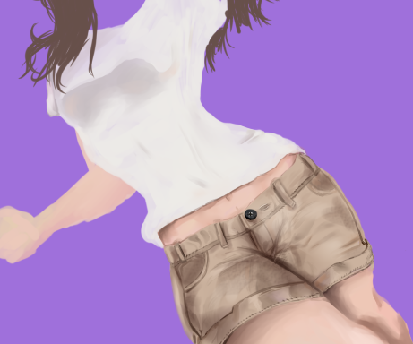
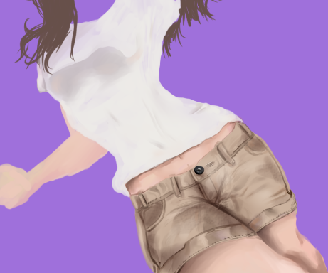
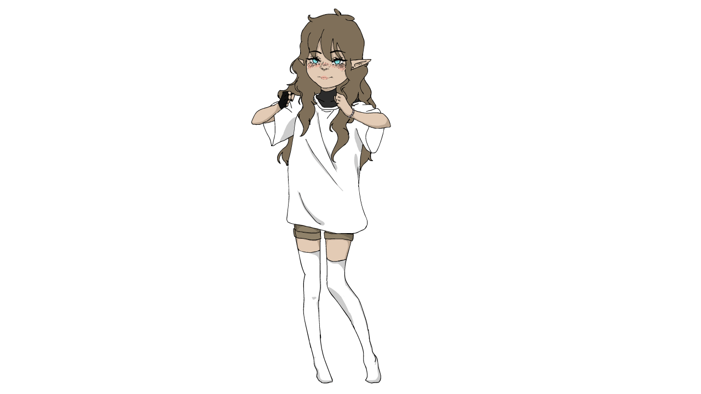
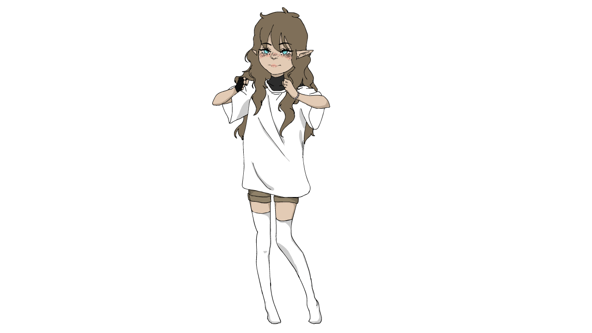

Hello,
I'm Veronika !
Graphic Designer • Coder
I combine creativity with code. Self-taught graphic designer and computer science student at
VŠB – Technical University of Ostrava.
Studentka CS
1. Ročník
Contact
- Ostrava, ČR
- vvsedlarova@gmail.com
PORTFOLIO
Education
2025 - Present
Computer Science
VŠB - Technical University of Ostrava
2017 - 2025
Student
Grammar School
#Logic
#Mathematics
#Analysis
Experience
2014 - Present
Graphic Design & Illustration
Personal Projects
2023 - Present
Web Development
Creating websites
#Creativity
#Communication
#Adaptability
Technical Skills
HTML
CSS
C
Canva
SAI
Office 365
Figma
Language
Czech
Native
Native
English
Fluent
Fluent

My Digital Art

Design

 
Character Art


Concept Art

Illustration
 
Animations

Branding
Model 1
Model 2
Model 3
Model 4
UI design
1 / 3
ANSI projekt
Práce s TGA soubory
To be...